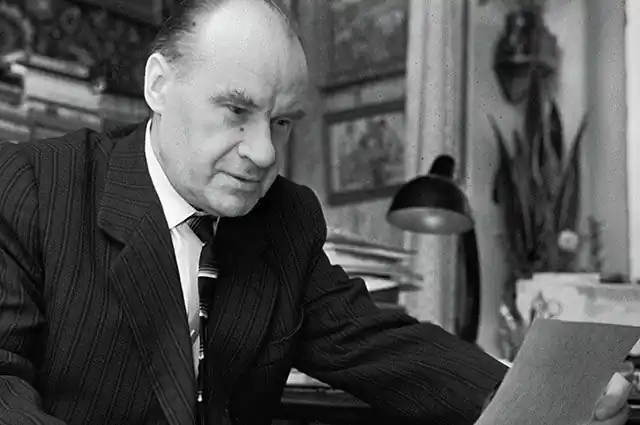
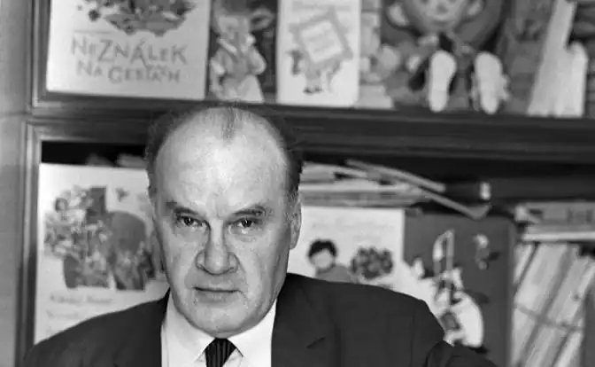
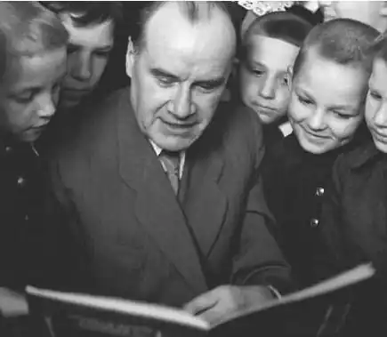
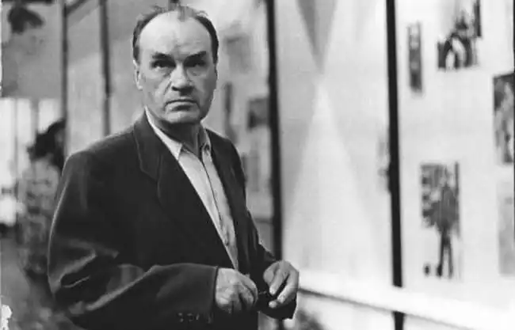

Микола Носов (1908— 1976) — радянський письменник, автор знаменитої трилогії "Незнайко".
Носов Микола Миколайович народився 10 листопада 1908 в Києві в сім'ї актора.
Дитинство провів в Ірпені. З 1915 по 1923 роки навчався в київській приватній гімназії Стельмашенка. З 1923 року родина знову мешкала у Ірпені, де Микола відвідував вечірню робітничу школу. У 1927—1929 вчився в Київському художньому інституті, звідки перевівся в Московський інститут кінематографії (закінчив у 1932). У 1932—1951 — режисер-постановник мультфільмів, науково-популярних та навчальних фільмів Почав публікувати оповідання у 1938 ("Витівники", "Живий капелюх", "Огірки", "Чудові брюки", "Мишкова каша", "Городники", "Фантазери" і ін., надруковані головним чином у "малюковому" журналі "Мурзілка" і що склали основу першої збірки Носова "Тук-тук-тук", 1945). Особливо широку популярність завоювали його повісті для підлітків "Весела сімейка" (1949), "Щоденник Миколки Синіцина" (1950), "Вітя Малєєв в школі і удома" (1951; Сталінська премія, 1952). Довготривалу популярність і любов читачів здобули його казкові твори про Незнайка. Перше з них — казка "Гвинтик, Шпунтік і пилосос". Надалі герой з'явився в знаменитій трилогії — "Пригоди Незнайки і його друзів", "Незнайко в Сонячному місті" (1958) і "Незнайко на Місяці" (1964—1965). За казкові твори автор отримав Державну премію Крупської. Проте творчість письменника полягала не тільки в написанні казок. За свою біографію Н.Носов також створив твори : "Повість про мого друга Ігоря", "Таємниця на дні колодязя", "Повість про дитинство" та інші. Микола Носов помер у Москві 26 липня 1976. Микола Носов: особисте життя Микола Носов був одружений двічі. Його перша дружина Олена померла, коли їх синові Петру було 15 років. Від другої дружини Тетяни дітей не було. Микола Носов присвятив їй "Пригоди Незнайка та його друзів".